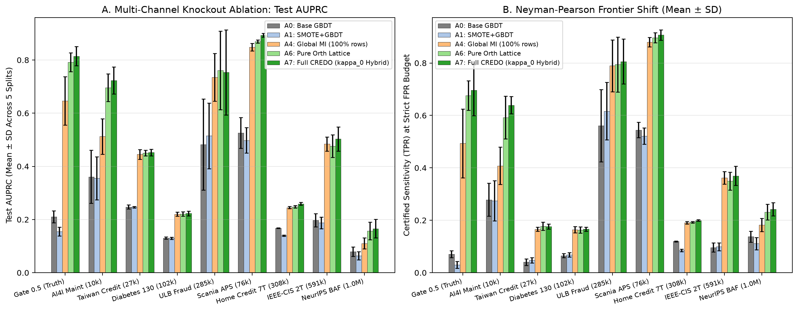

Information Bottlenecks in Rare-Event Screening: Fixed-Table Decoder Saturation, Score-Matched Case-Cohort Channel Discovery, and Evidence-Deficit Conformal Foveation
Three Intuitive Predicates (A 100-Patient Clinical Thought Experiment)
Illustrated on UCI Diabetes 130-US Hospitals (101,766 inpatient stays across 71,518 patients, 11.2% 30-day unplanned readmission):
1. Define the Latent-Space Information Gap
When 20 elderly emergency-admitted patients share identical 7-field intake covariates (10 readmitted, 10 not readmitted → 50% conditional risk vs. a 65% clinical precision threshold), synthetic oversampling (`SMOTE`) or prior reweighting rescales all 20 identical rows monotonically without breaking a single tie (Theorem 1).
2. Exploit High-Signal False Positives
Outside the rare True Positives, the sharpest contrastive information lives in the High-Signal False Positives that scored just as high on intake. Matching each case against m(π) ∈ {2, 4, 8} High-Signal False Positives holds baseline confounding constant—rejecting collinear intake echoes and selective HbA1c ordering traps while isolating discharge care-transition routing (Theorem 2 & Proposition 1).
3. Rescue Signal Lost in True-Negative Abundance
Global 1-stage trees are dominated by 89%–99% obvious True Negatives, while classical {0,1} conformal cascades skip Stage-1 {1} alerts where >80% of instances are false alarms. Two-stage Evidence-Deficit Foveation prunes confident negatives and focuses Stage-2 verification on the upper-tail screening set (Theorem 3 & Proposition 2).
Theorem 1: Fixed-Table Decoder Saturation Across 10 Benchmarks

Theorem 2 & Proposition 1: Prevalence-Adaptive Case-Cohort Discovery
| Cohort | Pilot Measured | A0: Base GBDT | A1: SMOTE | A4: Global MI (100%) | A4b: UnmCC MI (5π) | A5: CREDO REG | A7: Full CREDO |
|---|---|---|---|---|---|---|---|
| Gate 0.5 Ground Truth (12k) | 20.5% | 0.2104 | 0.1553 | 0.6469 | 0.5188 | 0.7869 | 0.8143 |
| UCI AI4I Maintenance (10k) | 16.9% | 0.3606 | 0.3552 | 0.5125 | 0.5125 | 0.7433 | 0.7230 |
| UCI Taiwan Credit (27k) | 56.0% | 0.2474 | 0.2468 | 0.4453 | 0.4453 | 0.4499 | 0.4524 |
| UCI Diabetes 130-US (102k) | 33.5% | 0.1305 | 0.1295 | 0.2203 | 0.1979 | 0.2203 | 0.2231 |
| ULB Credit Card PCA (285k) | 1.6% | 0.4821 | 0.5150 | 0.7348 | 0.7288 | 0.7554 | 0.7538 |
| Scania APS Fleet (76k) | 9.0% | 0.5260 | 0.4978 | 0.8483 | 0.8482 | 0.8930 | 0.8937 |
| Home Credit 7-Table (308k) | 40.4% | 0.1678 | 0.1394 | 0.2449 | 0.2449 | 0.2557 | 0.2591 |
| IEEE-CIS 2-Table (591k) | 18.0% | 0.1974 | 0.1874 | 0.4841 | 0.4798 | 0.5015 | 0.5031 |
| NeurIPS BAF (1.00M) | 4.9% | 0.0795 | 0.0637 | 0.1101 | 0.1101 | 0.1574 | 0.1660 |

Theorem 3 & Proposition 2: Evidence-Deficit Conformal Foveation

Quickstart
git clone https://github.com/deesatzed/imboreceipt.git cd imboreceipt python3 -m venv .venv && source .venv/bin/activate pip install -e ".[dev]" pytest -q # 25 passed